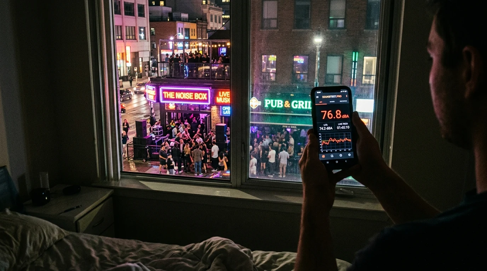

บันทึกเสียงรบกวนยามค่ำคืนจากสถานบันเทิงที่พรากการนอนหลับของคุณ.
โต๊ะนั่งดื่มริมทางที่เปิดเกินเวลา เสียงเบสตึบๆ และคนเมาส่งเสียงดังรบกวน ไม่ควรเป็นสิ่งที่คุณต้องทน บันทึกหลักฐานที่หนักแน่นด้วยการวิเคราะห์ LAeq 15 นาที ภาพถ่ายประทับค่าเสียง และรายงานเพื่อแจ้งเจ้าหน้าที่เทศบาล.

เกณฑ์จำกัดระดับเสียงสำหรับสถานบันเทิงและร้านค้า
เปรียบเทียบค่าที่วัดได้บริเวณหน้าต่างกับเงื่อนไขใบอนุญาตเปิดสถานบริการ.
| ระดับที่วัดได้ | แหล่งกำเนิดเสียงทางพาณิชย์ | เกณฑ์ผังเมืองและใบอนุญาต | การดำเนินการที่แนะนำ |
|---|---|---|---|
| < 45 dBA | ถนนที่เงียบสงบในเวลากลางคืน การจราจรบางตา | ระดับเสียงพื้นหลังเป้าหมายสำหรับพื้นที่อยู่อาศัยหลัง 23:00 น. | ระดับปกติ |
| 50 – 55 dBA | เสียงพูดคุยบริเวณระเบียง ดนตรีเบาๆ ในร้าน | เกณฑ์จำกัดตามกฎหมายริมแนวเขตที่ดินสำหรับสถานประกอบการ | ขีดจำกัดใบอนุญาต |
| 60 – 70 dBA | เสียงลูกค้าส่งเสียงดังนอกร้าน การแสดงดนตรีริมถนน | เกินเกณฑ์ยามวิกาล ส่งผลให้ผู้พักอาศัยนอนไม่หลับอย่างรุนแรง | ระดับรบกวน |
| 72 – 85 dBA | ลำโพงเปิดเพลงเสียงดัง คอนเสิร์ตสด ดนตรีเสียงเบสหนัก | ละเมิดเงื่อนไขใบอนุญาตอย่างชัดเจน สามารถแจ้งตำรวจระงับเหตุได้ | ละเมิดรุนแรง |
| 90+ dBA | เสียงเบสสั่นสะเทือนกระจกหน้าต่าง คลับบาร์เปิดเพลงล้น | มลพิษทางเสียงขั้นร้ายแรง มีมูลเหตุให้สั่งปิดสถานบริการชั่วคราว | สั่งปิดสถานประกอบการ |
ขั้นตอนการรวบรวมหลักฐานเอาผิดสถานประกอบการใน 4 ขั้นตอน
ขั้นตอนที่ถูกต้องเพื่อให้เจ้าหน้าที่เทศกิจและตำรวจสามารถออกใบสั่งและดำเนินคดีได้.
วัดค่า LAeq ต่อเนื่อง 15 นาที
ข้อกำหนดตามกฎหมายต้องใช้ระดับเสียงต่อเนื่องเทียบเท่า บันทึกช่วงเวลา 15 นาทีเพื่อแสดงระดับเสียงที่แท้จริง.
แยกความถี่ต่ำเสียงเบสด้วย FFT
ใช้ระบบ 1/3-octave เพื่อพิสูจน์การมีอยู่ของเสียงกระแทกย่านเบส 31.5 ถึง 125 Hz ที่ทะลุผ่านผนังเข้ามา.
ถ่ายรูปพื้นที่ร้านพร้อมประทับค่าเสียง
บันทึกลำโพงนอกร้าน โต๊ะที่ล้นออกมาบนทางเท้า หรือฝูงชน พร้อมประทับค่า dB และเวลาอย่างชัดเจน.
ยื่นรายงานต่อเจ้าหน้าที่เทศบาลและตำรวจ
ส่งออกเอกสารสรุป PDF เพื่อยื่นต่อสำนักงานเขต เทศบาล หรือสถานีตำรวจในพื้นที่เพื่อเข้าตรวจสอบทันที.
เครื่องมือความแม่นยำสูงสำหรับการตรวจวัดเสียงสถานประกอบการ
ออกแบบมาเพื่อให้สอดคล้องกับข้อกำหนดทางเทคนิคที่เจ้าหน้าที่รัฐต้องการ.
คำนวณค่า LAeq แบบเรียลไทม์
เฉลี่ยพลังงานเสียงในช่วง 5, 10 หรือ 15 นาทีตามเกณฑ์มาตรฐานทางกฎหมาย.
วิเคราะห์สเปกตรัมความถี่ 1/3-octave
ระบุเสียงเบสจากเครื่องเสียง พัดลมดูดควันอุตสาหกรรม และคอมเพรสเซอร์แอร์ได้อย่างแม่นยำ.
กล้องประทับพิกัด GPS และเวลา
ฝังค่าเสียง วันที่ เวลา และพิกัดลงในภาพถ่ายเพื่อใช้เป็นหลักฐานเชื่อมโยงไปยังร้านต้นเหตุ.
เปรียบเทียบเกณฑ์กลางวันและกลางคืน
เปรียบเทียบค่าที่วัดได้กับเกณฑ์จำกัดเสียงยามค่ำคืนที่เข้มงวดกว่าโดยอัตโนมัติ.
รายงาน PDF พร้อมยื่นสั่งปรับ
สร้างเอกสารสรุปที่มีกราฟและตารางการละเมิดเพื่อนำไปยื่นต่อเจ้าหน้าที่ท้องถิ่นเพื่อบังคับใช้กฎหมาย.
ประมวลผลในเครื่อง ปลอดภัยสูงสุด
ข้อมูลการตรวจวัดและภาพถ่ายทั้งหมดจะถูกเก็บไว้ในเบราว์เซอร์ของคุณ ไม่ส่งออกภายนอก.
หลักการสำคัญในการร้องเรียนสถานประกอบการให้ได้ผล
เจ้าหน้าที่มักละเลยการแจ้งเหตุลอยๆ ใช้หลักการทางเทคนิคเหล่านี้เพื่อให้เกิดการตรวจสอบจริง.
คำถามที่พบบ่อยเกี่ยวกับกรณีเสียงรบกวนนี้
SOUNDTEST.PRO เป็นเครื่องมือช่วยบันทึกหลักฐานเบื้องต้นสำหรับประชาชน มิใช่เครื่องวัดเสียงที่ผ่านการรับรองทางมาตรวิทยาตามกฎหมาย การดำเนินคดีทางการควรใช้การตรวจวัดร่วมกับผู้เชี่ยวชาญ
หมดเวลาทนกับเสียงสถานบันเทิงและร้านเหล้าใต้ตึกของคุณแล้ว
บันทึกการละเมิดด้วยข้อมูลที่เป็นรูปธรรมใน 10 วินาทีผ่านเบราว์เซอร์ ไม่ต้องซื้อเครื่องมือวัดราคาแพง รักษาความเป็นส่วนตัว 100%.